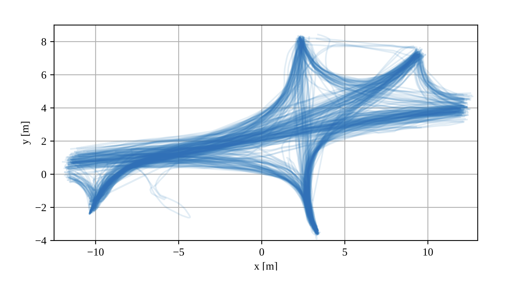

Visualization of the human trajectory prediction system in a factory setting. The system tracks previous trajectories (green) and predicts future movement (red), enabling proactive workstation preparation and non-invasive mobile robot navigation.
Research Objectives
- Develop algorithms for accurate prediction of human movement in industrial environments
- Enable machines to predict human intentions for enhanced safety and efficiency
- Reduce the need for traditional safety cages through intelligent trajectory prediction
- Increase productivity by proactively activating collaborative workstations before human arrival
- Create solutions that work with limited real-world training data through transfer learning and data augmentation
Research Challenges Addressed
- Limited availability of real-world human trajectory data in industrial settings
- Difficulty in capturing the complexity and variability of human movement patterns
- Need for real-time predictions that are both accurate and computationally efficient
- Balancing privacy concerns with data collection needs
- Creating models that generalize across different industrial environments
Research Approach
Data Collection
Using a state-of-the-art LiDAR system with reflective mirrors that extend the field of view, covering a 26m × 20m industrial floor. Human detection algorithms identify and track operators as they move between workstations.
Data Simulation
Developing synthetic human trajectory data using the Ornstein-Uhlenbeck stochastic process and TimeGAN (Generative Adversarial Networks for time series data) to overcome limited data availability.
Prediction Models
Implementing advanced deep learning architectures including LSTM networks, Transformer models, and other sequence prediction techniques to forecast human movements with high accuracy.
Transfer Learning
Pre-training models on synthetic data before fine-tuning on real-world data to improve performance in data-scarce scenarios.

Heatmap visualization of the human trajectory dataset collected from a real-world industrial environment, showing transition paths between six workstations.
Key Innovations
Transformer-Based Sequence-to-Sequence Model
A novel architecture for human trajectory prediction that outperforms traditional recurrent models by leveraging self-attention mechanisms and positional encoding to capture both short-term and long-term dependencies in movement patterns.
Transfer Learning with Data Augmentation
Combining synthetic trajectory generation with transfer learning to significantly improve prediction accuracy when real-world data is limited. Our approach showed an overall accuracy gain of 4.8 percentage points compared to training on real-world data alone.
Real-Time Prediction Framework
Predicting target workstations with 95.6% accuracy three seconds in advance, enabling systems to proactively prepare for human arrival and optimize collaborative workflows.
Comparative results of trajectory predictions using different algorithms. The transformer-based model (top) shows significantly better performance than traditional approaches.
Research Publications
Human Trajectory Simulation in Industrial Settings Using the Ornstein-Uhlenbeck Process and Deep Learning Based Classification
Even Falkenberg Langås, Muhammad Hamza Zafar, Svein Olav Nyberg, Filippo Sanfilippo
10th IEEE International Conference on Automation, Robotics and Applications (ICARA), 2024
Abstract: This paper presents a novel method of simulating human trajectories using the Ornstein-Uhlenbeck (OU) process in addition to deep learning (DL) based classification.
The OU process is a stochastic process and is used in this paper to simulate the movement of a person on a typical factory floor. This work aims at developing systems that increase machines' awareness of people and make predictions about their behaviour to improve efficiency and safety in industrial settings. Sequences of simulated 2D coordinates of people moving on the factory floor are generated. Successively, these synthetic data are used to classify the path that the human is following, using a stacked long short-term memory (LSTM) network and a stacked bidirectional LSTM (BiLSTM) network. The results from this study suggest that, for such applications, it should be possible to predict future movements in 2D for human-robot collaboration (HRC) and teaming (HRT).
Read more
Show less
Advancing Human Trajectory Prediction in Industrial Settings with Transfer Learning and Data Augmentation Using an LSTM Network
Even Falkenberg Langås, Atle Aalerud, Svein Olav Nyberg, Muhammad Hamza Zafar, Daniel Hagen, Filippo Sanfilippo
Submitted to IEEE Transactions on Cybernetics, 2025
Abstract: The successful realisation of Industry 5.0 relies on seamless collaboration between humans and robots in shared workspaces.
This paper investigates human trajectory prediction (HTP) in a factory setting to enhance safety, productivity, and adaptability in human-machine environments. Using a state-of-the-art light detection and ranging (LiDAR) system with reflective mirrors to extend the field of view, motion data are collected across a 26 m × 20 m indoor industrial floor. Human trajectories are classified to predict workstation transitions using a stacked long-short term memory (LSTM) network. To address the challenges of limited real-world data, transfer learning is applied by first training the model on synthetically generated trajectories. The paper compares a traditional stochastic method, specifically the Ornstein-Uhlenbeck (OU) process, with a modern learning based method, represented by a timeseries generative adversarial network (TimeGAN). Further on, the algorithm is fine-tuned on the real-world dataset. The comparison show that in data-scarce scenarios, OU outperforms TimeGAN in most metrics. The LSTM model trained on OU-based data and real-world data shows an overall accuracy gain of 4.8 percentage points compared to training on real-world data only. It is able to predict the goal workstation three seconds in advance with an accuracy of 95.6%, demonstrating the potential for predictive models to improve workplace operations by reducing stall time, optimising workstation readiness, and reducing the need for traditional safety cages.
Read more
Show less
A Transformer-Based Sequence-to-Sequence Model for Indoor Human Trajectory Prediction in a Factory Setting
Under preparation
Abstract: In modern manufacturing environments, the safe and efficient coexistence of humans and mobile robots is essential.
This paper presents a transformer-based sequence-to-sequence (Seq2seq) model designed for human trajectory prediction (HTP) on a factory floor, serving as a critical component for future robot navigation systems. By accurately forecasting human movements using real-world trajectory data, our approach lays the groundwork for mobile robots to efficiently navigate complex environments without interfering with or disturbing human activities. The model leverages advanced techniques including normalisation, positional encoding, and multi-head attention within transformer blocks—to capture both short- and long-term dependencies in human motion. Evaluation using metrics such as Mean Squared Error, Mean Absolute Error, and the coefficient of determination (R²) demonstrates significant improvements over traditional recurrent models. While this work focuses on the predictive model, its implications extend to the development of intelligent robotic systems that enhance operational safety and productivity through improved human–robot interaction.
Read more
Show less
Industrial Applications
Enhanced Safety
Enabling hazardous machinery to slow down before a human approaches, reducing the risk of accidents without the need for physical safety barriers.
Improved Efficiency
Collaborative workstations can be proactively activated before the human operator arrives, eliminating wait times and increasing productivity.
Space Optimization
Reducing or eliminating the need for traditional safety cages increases usable shop floor space in manufacturing environments.
Mobile Robot Navigation
Providing trajectory predictions for mobile robots to plan efficient paths that avoid disturbing or interfering with human activities.
Possible Future Research Directions
- Building larger and more diverse datasets to improve model generalization across different industrial environments
- Integrating the prediction system with real-time robot control for adaptive collaboration